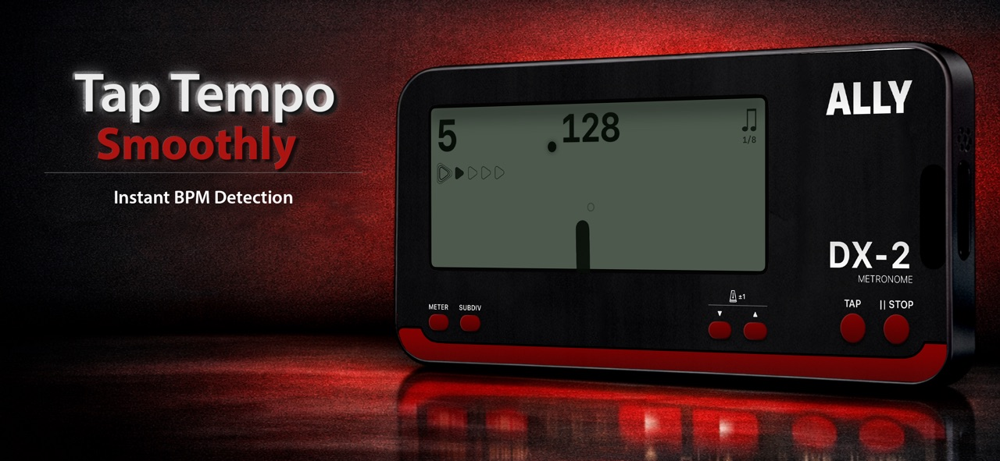

Tap into the tempo
Dial in your BPM or use tap tempo to find the pulse.
Music App Store
AllyMetronome
A metronome with the feel of a real instrument. Tap in a tempo and settle into your practice.
iPhone


Dial in your BPM or use tap tempo to find the pulse.
Choose meters, beat values, and subdivisions for the passage in front of you.
Follow the synchronized pendulum and choose from three sound banks.
ALSO IN THE FAMILY
Less setup. More practice.